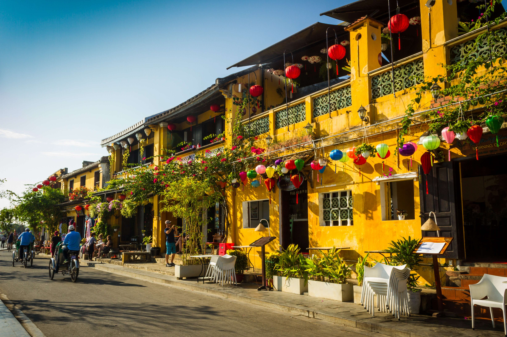
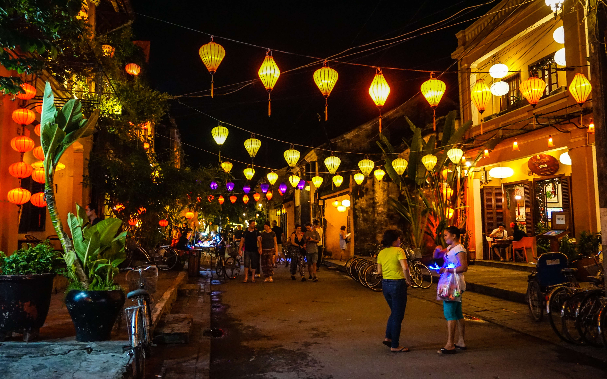
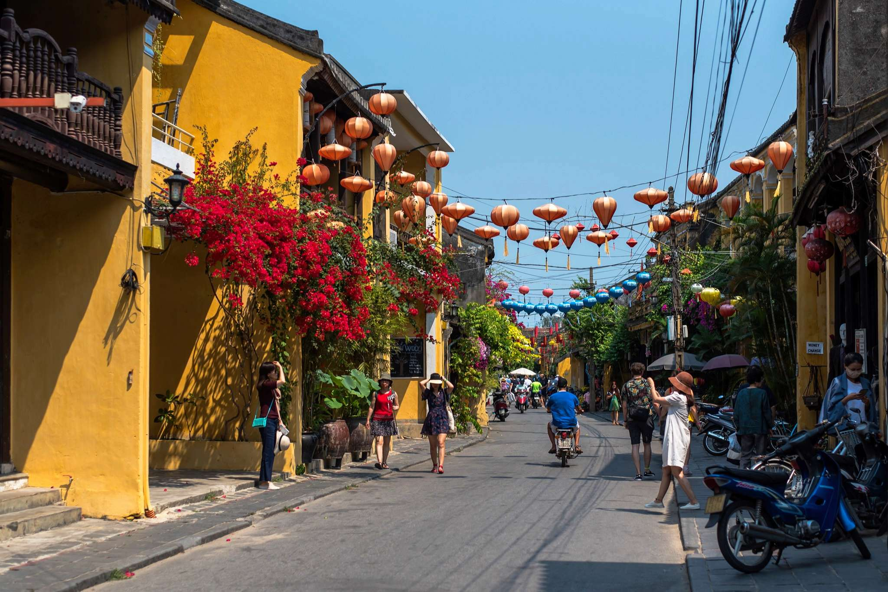
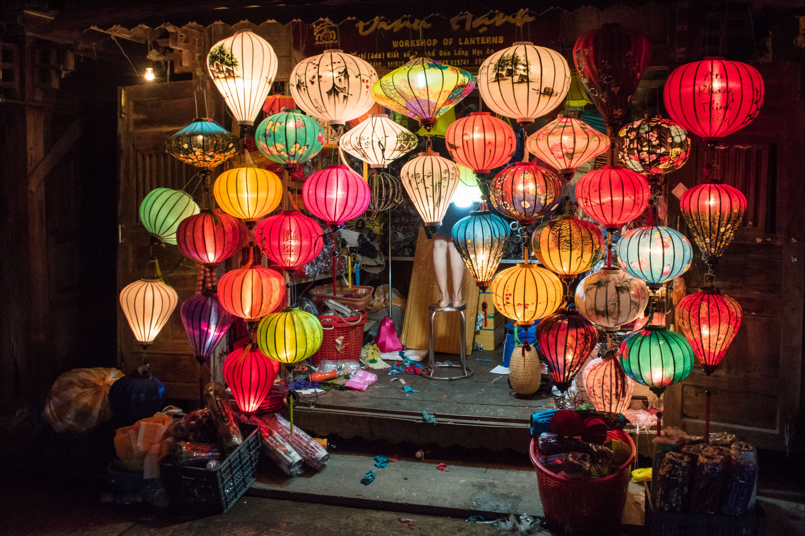

Hoi An
Hội An (Vietnamese: [hôjˀ aːn] (audio speaker iconlisten)), formerly known as Fai-Fo or Faifoo,
is a city with a population of approximately 120,000 in Vietnam's Quảng Nam Province and is noted
as a UNESCO World Heritage Site since 1999. Along with the Cu Lao Cham archipelago, it is part of
the Cu Lao Cham-Hoi An Biosphere Reserve, designated in 2009.
Old Town Hội An, the city's historic district, is recognized as an exceptionally well-preserved
example of a Southeast Asian trading port dating from the 15th to the 19th century, its buildings
and street plan reflecting a blend of indigenous and foreign influences.Prominent in the city's old
town is its covered "Japanese Bridge", dating to the 16th–17th century.
Hội An (會安) translates as "peaceful meeting place" from Sino-Vietnamese. In English and other European
languages, the town was known historically as Faifo. This word is derived from Vietnamese Hội An phố
(the town of Hội An), which was shortened to "Hoi-pho", and then to "Faifo". It has also been known as
Hải Phố, Hoài Phố, Hội Phố, Hoa Phố, Haiso and during the Champa period, it was named Lam Ap Pho.(click here for more information..)
In 1999 the old town was declared a World Heritage Site by UNESCO as a well-preserved example of a Southeast Asian trading port of the 15th to 19th centuries, with buildings that display a blend of local and foreign influences. According to the UNESCO Impact Report 2008 on Hội An, tourism has brought changes to the area which are not sustainable without mitigation.


Owing to the increased number of tourists visiting Hoi An a variety of activities are emerging that allow guests to get out of the old quarter and explore by motorbike, bicycle, kayak, or motorboat. The Thu Bon River is still essential to the region more than 500 years after António de Faria first navigated it and it remains an essential form of food production and transport. As such kayak and motorboat rides are becoming an increasingly common tourist activity.
This longtime trading port city offers a distinctive regional cuisine that blends centuries of
cultural influences from East and Southeast Asia. Hoi An hosts a number of cooking classes where
tourists can learn to make cao lầu or braised spiced pork noodle, a signature dish of the city.
The Hoi An wreck, a shipwreck from the mid- to late-fifteenth century, was discovered off the
coast of the city in the 1990s. A few years later, it was excavated; thousands of ceramic artefacts
were discovered.
Another attraction is the Hoi An Lantern Full Moon Festival taking place every full moon cycle.
The celebrations honour the ancestors. People exchange flowers, lanterns, candles, and fruits
for prosperity and good fortune.


The Faifo Coffee house has an open air rooftop that has become a particularly popular location
for Asian tourists to stop for well dressed selfies and posed photos.